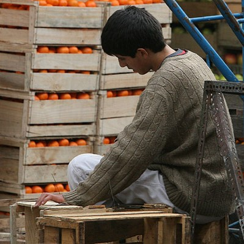

El trabajo en la adolescencia es un tema complejo que involucra diversas dimensiones: la económica, la educativa, la psicológica y la social; se explorarán las implicaciones del trabajo adolescente, abordando tanto los aspectos positivos como los negativos, y se analizarán las políticas y normativas que buscan regular esta actividad.
La adolescencia es una etapa crucial del desarrollo humano, caracterizada por la transición de la niñez a la adultez, durante este periodo, los adolescentes experimentan cambios físicos, emocionales y sociales significativos. En muchos contextos, el trabajo adolescente es una realidad impulsada por diversas razones, entre las cuales destacan la necesidad económica familiar, el deseo de independencia financiera y la adquisición de experiencia laboral temprana.
Según datos de la Organización Internacional del Trabajo (OIT), se estima que en el mundo hay aproximadamente 152 millones de niños y adolescentes entre 5 y 17 años que trabajan, de los cuales 73 millones realizan trabajos peligrosos, esta cifra pone de manifiesto la necesidad de un enfoque equilibrado que permita a los adolescentes trabajar en condiciones seguras y sin comprometer su desarrollo integral.
Para mitigar los riesgos asociados con el trabajo adolescente, es crucial que existan políticas y regulaciones claras. En muchos países, las leyes establecen límites de edad mínima para trabajar y definen las condiciones laborales permitidas para los adolescentes. Estas regulaciones buscan proteger a los jóvenes de trabajos peligrosos y asegurar que su trabajo no interfiera con su educación.
La OIT, a través de convenios como el Convenio 138 sobre la edad mínima y el Convenio 182 sobre las peores formas de trabajo infantil, proporciona un marco internacional para la protección de los adolescentes en el ámbito laboral. Estos convenios instan a los países a adoptar medidas para eliminar el trabajo infantil peligroso y promover condiciones de trabajo decentes para los jóvenes.
El trabajo en la adolescencia es una cuestión de doble filo, con potencial para ofrecer beneficios significativos, pero también con riesgos considerables. Es fundamental que los adolescentes tengan la oportunidad de trabajar en condiciones seguras y justas que no comprometan su educación ni su bienestar. Las políticas y regulaciones deben ser rigurosamente implementadas y supervisadas para asegurar que el trabajo adolescente contribuya positivamente a su desarrollo personal y profesional. Al hacerlo, se puede lograr un equilibrio que permita a los adolescentes crecer y prosperar tanto en su vida laboral como académica.
{kind=link}